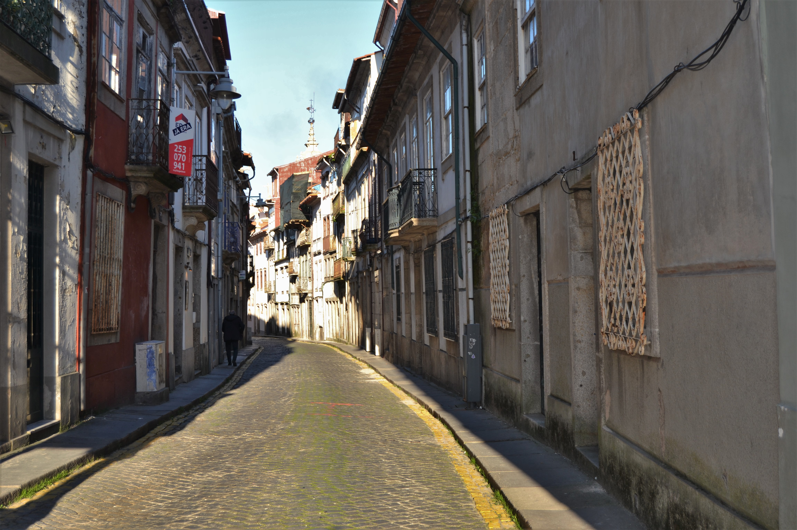
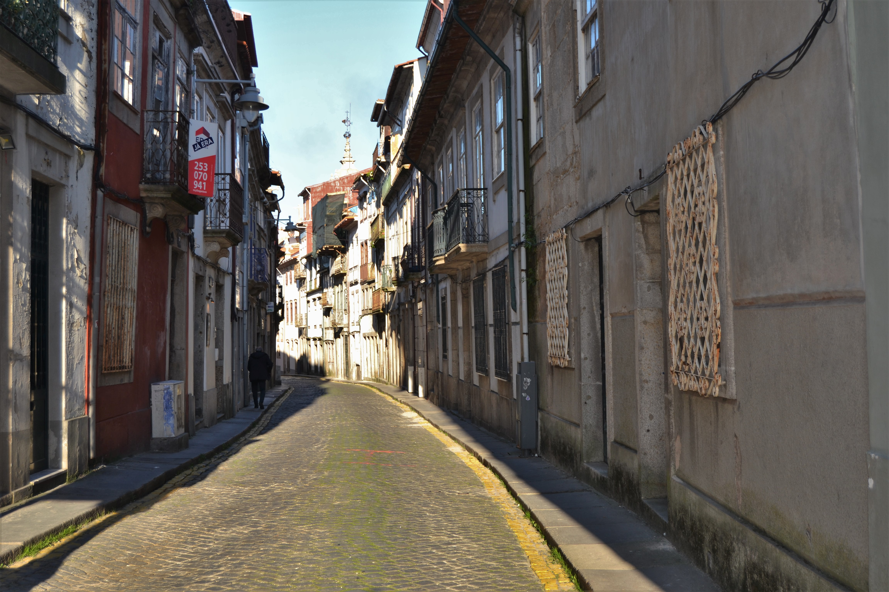

Grande largo mandado abrir por D. Diogo de Sousa, em frente à porta da muralha que tem o mesmo nome.
Ponto de chegada da estrada do Porto, que subia a rua dos Pelames, este campo passou a ter uma maior importância a partir da construção das novas instalações do Colégio de S. Paulo (na década de 1560-1570) sobre a muralha, no local onde agora se encontra o Seminário de Santiago. Este edifício, contudo, tinha apenas duas fiadas corridas de janelas abertas para ele.
Rapidamente todo este espaço foi preenchido. Com D. Frei Bartolomeu dos Mártires a zona envolvente ao Colégio (ruas dos Pelames, rua S. Paulo, largo de S. Paulo e campo de S. Tiago) foi limpa das prostitutas e dos ociosos que aí habitavam, para neles poderem viver, em melhor ambiente, os estudantes que chegaram a atingir um número máximo de 2000 alunos.
Em 1623 a Câmara mandou construir uma fonte «cêrca da torre e porta de S. Tiago e em frente da rua dos Pellames», que foi removida em 1745, por determinação do Arcebispo D. José de Bragança, fazendo-se então o actual chafariz.
Em 1759, com a expulsão dos Jesuítas, a quem fora confiado o ensino neste colégio, o campo de S. Tiago deverá ter perdido grande parte da sua vida.
Em 1750 no lado Sul deste largo havia onze casas, todas prazos do Cabido, que se podiam dividir em três grupos: um, mais pobre, (casas dos prazos 5 a 11) de desenho de fachada simples, com janelas do tipo bracarense, parcialmente cobertas por gelosias; outro (casas dos prazos 2 a 4) mais cuidado, com portas com rebordo saliente e frisos, também de pedra, sobre as janelas; e o terceiro, formado pela belíssima casa dos Falcões Cota, mandada fazer em 1703 pelo Cónego Meira Carrilho, e onde actualmente está instalado o Governo Civil.
Rua extramuros, ao longo da parte Sul da muralha, servia de ligação entre os campos de S. Tiago e dos Remédios, ambos abertos por D. Diogo de Sousa.
Esta rua cujas «...casas ccom seus quintais que do ano de 1540 para diante se começaram a edificar...» seria também uma consequência, embora indirecta, da obra daquele grande arcebispo.
Tendo do lado Norte casas que encostavam à muralha e que talvez fossem prazos da Câmara, estava, já em 1594, totalmente edificada na parte Sul conforme se vê no mapa de Braunio.
Lentamente se terá mudado o estatuto social dos seus moradores. É que embora haja hoje em dia muitos edifícios do séc. XVII a XIX de grande qualidade, a ponto de a tornar uma das ruas mais interessantes da cidade actual, em 1750, ao lado de apenas 3 casas grandes havia uma série de outras pequenas, do tipo com porta ladeada de janela no piso térreo, e que já vimos ser característica das ruas secundárias e mais distantes do centro.
No seu extremo nascente, com fachada virada ao campo dos Remédios, estava a igreja de Santa Cruz, cujo alçado lateral Norte faceava inteiramente esta rua.
Das 16 casas aqui apresentadas só uma, a que ficava imediatamente atrás daquela igreja, não era prazo do Cabido.
Não existem casas nesta rua.
 Vista 2:

Vista 2:

 Rua do Anjo - Sul.
Rua do Anjo - Sul.